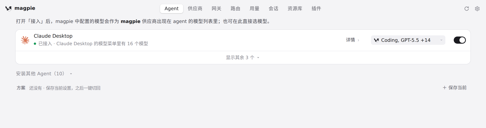
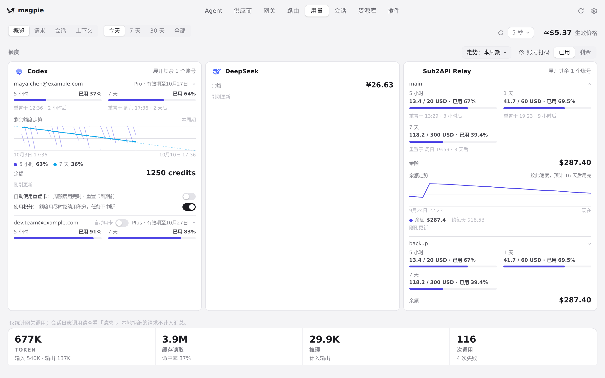

#1042 界面预览
commit c9dc7a5 · 回到 PR · 这个 diff 只改 macOS 上的原生窗口外壳：在 macOS 26 的设计里把主窗口自带的空 NSToolbar 摘掉，让窗口圆角从工具栏窗口的（26pt）变成普通标题栏窗口的（16pt），同时把交通灯位置、标题栏高度、sheet 起始位置和「别的 App 在前时按标题栏拖动窗口」的行为维持成工具栏时的样子；页面自身、页面上的导航和按钮都不变。
红线是鼠标走过的轨迹，红色圆环是一次点击；底部文字是这一步在做什么。空格暂停，← → 逐段查看。

macOS 主窗口的标题栏与边角 · 主窗口顶部：macOS 上交通灯嵌在这条 header 里，窗口圆角在整窗外侧

macOS 主窗口的标题栏与边角 · 切换标签后的主窗口：标题栏里的标签仍可点击，窗口外壳由 macOS 自己绘制